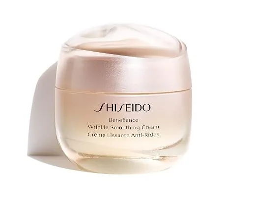

Análisis de Eyelasticity™: Cómo Drenar Bolsas y Aclarar Ojeras Sin Cirugía
Por el Equipo Editorial de Derm Audit • Actualizado Septiembre 2026 • 6 Min de Lectura


La piel periocular ultra delgada deja ver el estancamiento de sangre oscura y microfugas de líquido.
Eyeseryl® desinflama evacuando líquidos retenidos mientras Regu-Age sella los microcapilares.
Reducción de bolsas de hasta un 70% en 15 días y aclarado visible de sombras vasculares.
Resumen Ejecutivo: Eyelasticity™ aborda las causas vasculares y linfáticas del envejecimiento periocular en lugar de utilizar tensores cosméticos superficiales. Su combinación de tetrapéptido Eyeseryl® y Regu®-Age refuerza las paredes microcapilares y drena el líquido intersticial estancado, reduciendo notablemente las bolsas y ojeras.
¿Por Qué la Piel Bajo los Ojos Envejece Primero?
Toca tu mejilla con el dedo. Esa piel es gruesa, fuerte y resistente. Es como una pieza de cartón sólido.
Ahora toca la piel justo debajo de tu párpado inferior. Esa piel es totalmente distinta. Solo mide 0,5 milímetros de grosor. Es tan delgada como una hoja de papel de seda húmedo. Al ser tan fina, carece de grasa protectora debajo.
Justo detrás de esa fina capa se encuentra una densa red de diminutos vasos sanguíneos. Cuando estás cansado o estresado, la circulación se ralentiza. Los glóbulos rojos pierden oxígeno y se estancan. Cuando la sangre oscura desoxigenada se acumula detrás de esta piel tan fina, se trasluce como una sombra morada, azul o negra. Esa es la causa biológica exacta de las ojeras oscuras.
🚨 El Error de las Cremas Grasas (Quistes de Milium):
Muchas personas compran cremas de noche densas y grasas para tratar las bolsas. Es un grave error. Las cremas densas contienen vaselina, aceites minerales y ceras pesadas. La piel periocular tiene microporos que no pueden absorber grasa espesa. El aceite obstruye las glándulas y atrapa células de queratina, formando pequeñas protuberancias blancas permanentes llamadas quistes de milium. ¡Nunca apliques cremas faciales pesadas en el contorno de ojos!
La Ciencia de las Bolsas Oculares: El Problema de la Manguera con Fugas
¿Por qué las bolsas de los ojos amanecen tan hinchadas por la mañana?
Imagina que tus pequeños capilares bajo los ojos son como mangueras de jardín microscópicas. Con los años, sus paredes se vuelven finas y frágiles. Se forman microfisuras por las que se filtran agua, sales y linfa hacia los tejidos cercanos.
Al dormir en posición horizontal, la gravedad deja de tirar de los líquidos hacia los pies. El agua filtrada se acumula en el espacio hueco bajo los ojos como un diminuto globo de agua. Al ser el drenaje linfático muy lento, el líquido queda atrapado. El resultado es una bolsa hinchada y pesada.
Cómo Eyelasticity™ Restaura una Mirada Firme y Luminosa en 3 Fases
Desarrollado por el cirujano cosmético Dr. Dave David, M.D., Eyelasticity™ evita los aceites que causan milium. En su lugar, utiliza un gel acuoso de rápida absorción con 4 micro-péptidos clínicos que actúan en 3 fases:
- Fase 1: Drenar Líquido Retenido (Eyeseryl®) — Estimula la microcirculación linfática local para desinflar las bolsas matutinas en 15 días.
- Fase 2: Sellar Microcapilares (Regu®-Age) — Refuerza las paredes capilares para evitar el estancamiento sanguíneo, aclarando las ojeras oscuras hasta un 35% según pruebas del fabricante.
- Fase 3: Engrosar la Almohadilla Tisular (Syn®-Coll y Pro-Coll-One+) — Estimula el colágeno para engrosar la fina piel periorbital, ocultando los vasos oscuros y alisando patas de gallo.
Los 4 Micro-Péptidos Específicos
1. Eyeseryl® (Tetrapeptide-5)
La Bomba de Drenaje Linfático: Frena las fugas capilares y activa el drenaje. Reduce el volumen de las bolsas en el 70% de los voluntarios en solo 15 días.
2. Regu®-Age Complex
El Escudo de Microcirculación: Péptidos de soja y arroz que fortalecen los capilares, disminuyendo ojeras en un 35% e hinchazón en un 32%.
3. Syn®-Coll (Tripeptide-5)
El Engrosador de Tejido: Estimula la síntesis de colágeno mediante mimetismo de TGF-beta. Engrosa la piel para ocultar las venas estancadas.
4. Pro-Coll-One+ & Beta-Glucan
El Fijador de Elasticidad: Según datos del fabricante, glicopéptidos purificados aumentan el colágeno Tipo I hasta en un 1.190% para alisar arrugas, mientras el betaglucano calma la piel sensible.
Gorin-Leduc A, et al. Vascular permeability modulation and antiedemic activity of Acetyl Tetrapeptide-5 in the treatment of peri-orbital eye bags. Journal of Cosmetic Dermatology / Lipotec Clinical Dossier.
Comparativa de Fórmulas: Eyelasticity™ frente a Shiseido Benefiance
| Característica / Especificación |
Eyelasticity™
Selección: Terapia Periorbital
|
 Shiseido Benefiance
Punto de Referencia
|
|---|---|---|
| Mecanismo Activo Principal | Matriz Vascular de 4 Péptidos: Eyeseryl® drena líquido, Regu®-Age sella capilares, Syn®-Coll regenera colágeno. | Hidratación oclusiva densa con escualano, vaselina y extractos botánicos. |
| Textura y Riesgo de Milium | Gel acuoso ligero que se absorbe al instante sin taponar los microporos. | Alto Riesgo de Milium. Base de ceras minerales y vaselina que satura las delicadas glándulas oculares. |
| Drenaje Clínico de Bolsas | 70% de Reducción en 15 Días (Ensayos clínicos verificados con Eyeseryl®). | Sin péptidos específicos de drenaje linfático. |
| Garantía de Devolución | 67-Day Garantía de Devolución | Sin garantía una vez abierto. |
| Precio Oficial | $59.95 (Precio directo de fabricante) | $65.00 – $74.00 (Margen comercial elevado) |
| Acción Recomendada | Ver Oferta Oficial | Ver Shiseido |
Ventajas Destacadas:
- Fórmula desarrollada por el cirujano estético Dr. Dave David, M.D.
- Rápido drenaje linfático en 15 días (70% de reducción en bolsas)
- Aclara ojeras vasculares hasta un 35% sin blanqueadores tóxicos
- Gel acuoso no comedogénico
- Respaldado por garantía de devolución de 67 días del fabricante
Aspectos a Considerar:
- Debe aplicarse dos veces al día (mañana y noche) sobre la piel limpia
- Hundimientos óseos hereditarios profundos pueden requerir ácido hialurónico para corrección total
Cronograma de Resultados de 60 Días
Días 1 – 14
Se activa el drenaje linfático. La hinchazón y el estancamiento matutino bajan notablemente en 15 días.
Días 15 – 35
Las paredes capilares se fortalecen. La sangre acumulada se dispersa, aclarando ojeras hasta un 35%.
Días 36 – 60+
Syn-Coll y Pro-Coll-One+ reconstruyen el colágeno, reafirmando la piel y alisando patas de gallo.
Preguntas Frecuentes
¿Eyelasticity causa quistes de milium (puntos blancos bajo el ojo)?
No. A diferencia de las cremas grasas con derivados de petróleo, Eyelasticity es un sérum acuoso y ligero. Se absorbe en segundos sin taponar los microporos.
¿Puedo aplicar protector solar o maquillaje encima de Eyelasticity?
Sí. Tras aplicar una pequeña cantidad y esperar 60 segundos a que absorba, puedes aplicar corrector, base o fotoprotector sin que se formen grumos ni residuos grasos.
¿Cuánto dura un frasco?
Un frasco de 15 ml dura aproximadamente entre 30 y 45 días aplicando dos veces al día en ambos ojos.
¿Lista para una Mirada Más Firme, Luminosa y Rejuvenecida?
Prueba la terapia peptídica de Eyelasticity™ con 67 días de garantía de devolución del fabricante.
Visitar Tienda Oficial de Eyelasticity